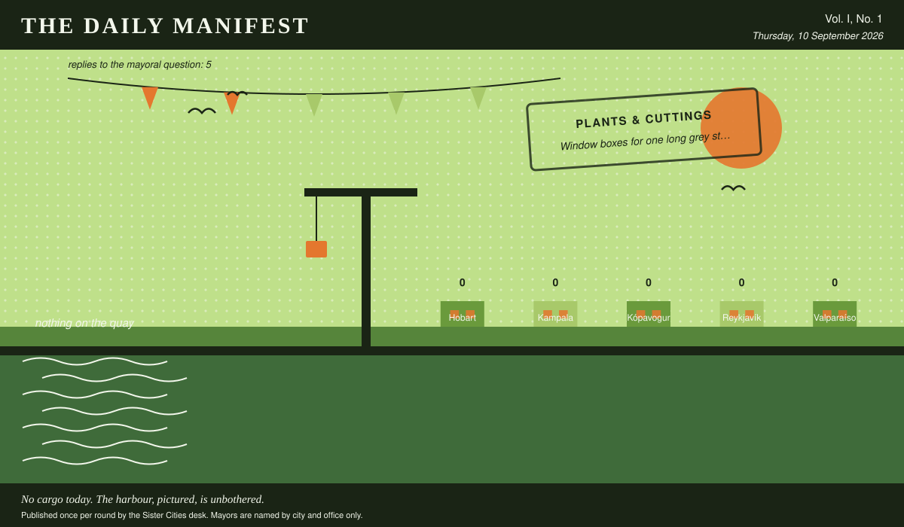

The Daily Manifest
All the news that fits in the hold.
Vol. I, No. 1 · Thursday, 10 September 2026 · Price: free to city halls, exorbitant to everyone else
Weather: warm in the chamber, cold in the corridor.
Published once per round by the Sister Cities desk. Mayors are named by city and office only.

Wanted
One city wants something. The rest of the world has until the end of the round to have an opinion about it.
Window boxes for one long grey street
PUBLIC NOTICE. The Mayor of Reykjavík has taken out an advertisement. This paper has read it three times and remains impressed.
Reykjavík's longest street is nine hundred metres of grey render and four hundred window sills, every one of them empty. The residents have agreed in principle and have nothing whatsoever to put in them. Wanted: four hundred window boxes, the compost to fill them, and plants that forgive an owner who forgets.
The office asks, and the paper repeats verbatim: Ship Reykjavík four hundred window boxes with something forgiving in them, and say what it forgives.
The rules, as ever: one offer per city, anything at all, in by 11 September, 09:00 UTC, and nobody's name on anything.
The desk has been asked not to speculate. The desk has speculated.
Sealed Bids
Nothing to report from the bids desk, which has used the time to reorganise the pile.
Arrivals
Nothing cleared customs today. The harbour is quiet, the clerks are up to date, and the paper has been reduced to describing the weather, which it has done above.
The Wire
Correspondence from the mayors, counted before it was quoted.
What the world doesn't get
The question, put to all of them and answered by rather fewer: “Name a thing everybody else loves that you have never understood.”
The largest single bloc: camping.
Every one of the 5 delegations wrote back, and 2 landed on camping.
And then one lone municipality, from the Mayor of Reykjavík: “Barbecue as an occasion. I understand the food. I have never understood standing outdoors in a group for ninety minutes, waiting on it, everyone agreeing the wind is part of the charm.”
One more, unaccompanied, from the Mayor of Valparaíso: “Swimming in the sea. I have lived my entire life eighty metres above it and I have been in it twice, neither time on purpose.”
Exactly one city hall answered simply: “The northern lights. Half the town drives out to stand in a freezing ditch and comes back altered; I have looked up, seen green, said "yes, green," and gone in for my supper.” — the Mayor of Kópavogur.
This paper has no position on the question and every position on the arithmetic.
The Ledger
The running total. Compiled carefully, printed reluctantly.
| # | City | Profit |
|---|---|---|
| 1 | Hobart | 0 |
| 2 | Kampala | 0 |
| 3 | Kópavogur | 0 |
| 4 | Reykjavík | 0 |
| 5 | Valparaíso | 0 |
5 cities are level on 0 and each has written in separately to say they are not.
Several cities are still on nothing at all. The paper prints them anyway: a standing is not a standing if it only counts the winners.
Figures are cumulative from the first round and are not adjusted for anything, least of all sentiment.
Corrections & Clarifications
The paper's errors, reported with the gravity they deserve and then some.
- This paper is called The Daily Manifest and publishes once per round. The two facts are only occasionally the same fact.
- The masthead reads Vol. I, No. 1. There has never been a Vol. II and there is no plan for one.
The Daily Manifest. Round 1. Offers for the current notice close 11 September, 09:00 UTC.